Q1D dialog.
Table of Contents
SANS 1D reduction. Converts a workspace in wavelength into a workspace of momentum transfer, assuming elastic scattering
| Name | Direction | Type | Default | Description |
|---|---|---|---|---|
| DetBankWorkspace | Input | MatrixWorkspace | Mandatory | Particle counts as a function of wavelength |
| OutputWorkspace | Output | MatrixWorkspace | Mandatory | Name of the workspace that will contain the result of the calculation |
| OutputBinning | Input | dbl list | Mandatory | A comma separated list of first bin boundary, width, last bin boundary. Optionally this can be followed by a comma and more widths and last boundary pairs. Negative width values indicate logarithmic binning. |
| PixelAdj | Input | MatrixWorkspace | Scaling to apply to each spectrum. Must have the same number of spectra as the DetBankWorkspace | |
| WavelengthAdj | Input | MatrixWorkspace | Scaling to apply to each bin. Must have the same number of bins as the DetBankWorkspace | |
| WavePixelAdj | Input | MatrixWorkspace | Scaling that depends on both pixel and wavelength together. Must have the same number of bins and spectra as the DetBankWorkspace. | |
| AccountForGravity | Input | boolean | False | Whether to correct for the effects of gravity |
| SolidAngleWeighting | Input | boolean | True | If true, pixels will be weighted by their solid angle. |
| RadiusCut | Input | number | 0 | To increase resolution some wavelengths are excluded within this distance from the beam center (mm). Note that RadiusCut and WaveCut both need to be larger than 0 to affect the effective cutoff. See the algorithm description for a detailed explanation of the cutoff. |
| WaveCut | Input | number | 0 | To increase resolution by starting to remove some wavelengths below this threshold (angstrom). Note that WaveCut and RadiusCut both need to be larger than 0 to affect on the effective cutoff. See the algorithm description for a detailed explanation of the cutoff. |
| OutputParts | Input | boolean | False | Set to true to output two additional workspaces which will have the names OutputWorkspace_sumOfCounts OutputWorkspace_sumOfNormFactors. The division of _sumOfCounts and _sumOfNormFactors equals the workspace returned by the property OutputWorkspace (default is false). |
| ExtraLength | Input | number | 0 | Additional length for gravity correction. |
| QResolution | Input | MatrixWorkspace | Workspace to calculate the Q resolution. |
The unit of the output workspace is 1/cm. Assuming this algorithm is called with the appropriate input correction workspaces, include accounting for absolute scaling, the output is meant to represent a macroscopic cross section, hence the reason the output unit is 1/cm.
Section includes explanation for the effect of setting AccountForGravity to true.
The equation for  as a function of wavelength,
as a function of wavelength,  ,
and neglecting gravity, is
,
and neglecting gravity, is

where  is the particle’s angle of deflection. If a
particle’s measured deflection over the sample to the detector (pixel)
distance,
is the particle’s angle of deflection. If a
particle’s measured deflection over the sample to the detector (pixel)
distance,  , is
, is  along the x-axis and
along the x-axis and  along
the y-axis then
along
the y-axis then  is
is

Including gravity adds another term to this equation which becomes:
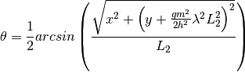
where 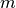 is the particle’s mass,  is the acceleration
due to gravity and
is the acceleration
due to gravity and  is plank’s
constant (this assumes
neutrons are all travelling in horizontal at sample, and that
is plank’s
constant (this assumes
neutrons are all travelling in horizontal at sample, and that
 would be beam centre at
would be beam centre at  ).
).
This section describes the normalisation/scaling/correction of the input workspace using PixelAdj, WavelengthAdj and WavePixelAdj.
This algorithm takes as input a workspace of neutron counts against wavelength and creates a workspace of cross section against Q. The output Q bins boundaries are defined by setting the property OutputBinning.
Below is the formula used to calculate the cross section, here denoted
 , for one bin in the output workspace whose bin number is
denoted by I, when the input workspace has just one detector. Each bin
is calculated from the sum of all input wavelength bins, n, that
evaluate to the same Q using the formula for Q at the top of this page.
In equations this relationship between the input bins and the output
bins is represented by
, for one bin in the output workspace whose bin number is
denoted by I, when the input workspace has just one detector. Each bin
is calculated from the sum of all input wavelength bins, n, that
evaluate to the same Q using the formula for Q at the top of this page.
In equations this relationship between the input bins and the output
bins is represented by  and an example of a set of
two bins is shown diagrammatically below. (Each Q bin contains the sum
of many, one, or no wavelength bins.)
and an example of a set of
two bins is shown diagrammatically below. (Each Q bin contains the sum
of many, one, or no wavelength bins.)

In the equation the number of counts in the input spectrum number is
denoted by  ,
,  is the wavelength dependent
correction and
is the wavelength dependent
correction and  is the solid angle of the
detector
is the solid angle of the
detector

The wavelength dependent correction is supplied to the algorithm through the WavelengthAdj property and this workspace must have the same wavelength binning as the input workspace and should be equal to the following:
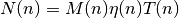
where  , 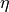 and
, 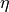 and  are the monitor counts,
detector efficiency and transmission fraction respectively.
are the monitor counts,
detector efficiency and transmission fraction respectively.
Normally there will be many spectra each from a different pixel with a
row number  and column number
and column number  . Because the value of
varies between pixels corresponding input bins (n) from
different input spectra can contribute to different output bins (I) i.e.
will be different for different pixels. For multiple
spectra the sum for each output bin will be over the set of input bins
in each pixel that have the correct Q, that is
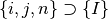 while 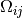 is detector
dependent:
. Because the value of
varies between pixels corresponding input bins (n) from
different input spectra can contribute to different output bins (I) i.e.
will be different for different pixels. For multiple
spectra the sum for each output bin will be over the set of input bins
in each pixel that have the correct Q, that is
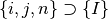 while 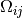 is detector
dependent:
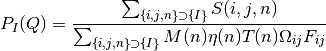
where  is the detector dependent (e.g. flood) scaling specified
by the PixelAdj property, and where a bin
is the detector dependent (e.g. flood) scaling specified
by the PixelAdj property, and where a bin  spans more than one bin
spans more than one bin  , it is split assuming a
uniform distribution of the counts in . The normalization
takes any bin masking into account.
, it is split assuming a
uniform distribution of the counts in . The normalization
takes any bin masking into account.
Some corrections will be both pixel and wavelength dependent, for example an angle transmission correction. Such corrections can be taken into account by specifying WavePixelAdj.
There are two sources of uncertainty in the intensity: the statistical (counting) error and the finite size of the bins, i.e. both time bins and the spatial extent of the detectors (pixels). The first error is reducible by increasing the length of the experiment or bin sizes while the second reduces with smaller bin sizes. The first is represented by the errors on the output workspace but the second is not included in the error calculation although it increases uncertainties and degrades the effective resolution of the data none the less. This algorithm allows the resolution to be improved by removing the bins with the worst resolution.
Normally the bins that give the worst resolution are those near the beam
center and with short wavelengths. When the optional properties
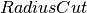 and  are set bins from this region of
the input workspace are removed from the intensity calculation (both
from the numerator and denominator). For a pixel at distance R from the
beam center the wavelength cutoff,
are set bins from this region of
the input workspace are removed from the intensity calculation (both
from the numerator and denominator). For a pixel at distance R from the
beam center the wavelength cutoff,  , is defined by the
input properties and as:
, is defined by the
input properties and as:

The bin that contains the wavelength and all lower
indices are excluded from the summations for that detector pixel.
From the equation it is possible to see that for pixels in
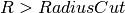 all (positive) wavelengths are included. Also
substituting 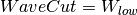 we have that  and
hence all detectors contribute at wavelengths above .
and
hence all detectors contribute at wavelengths above .
Practically, it is more likely to be necessary to implement
and in situations where the scattering
near to the beamstop is weak and ‘contaminated’ by short wavelength
scatter. This might arise, for example, when running at long
sample-detector distances, or at short sample-detector distances with
large diameter beams, or where the sample generates Bragg peaks at
low-Q. The best recourse is to check the wavelength overlap. If it is
not too bad it may be possible to improve the data presentation simply
by altering 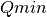 and the binning scheme.
For an example of how Q1D is used see ISIS SANS data reduction.
References
R.P. Hjelm Jr. *J. Appl. Cryst.* (1988), 21, 618-628.
P.A. Seeger & R.P. Hjelm Jr. *J. Appl. Cryst.* (1991), 24, 467-478.
It is possible to divide the input workspace by the WavelenghAdj and PixelAdj workspaces prior to calling this algorithm. The results will be same as if these workspaces were passed to Q1D instead when there are high numbers of particle counts. However, in this scheme the probabilities tend to converge on the true high count probabablities more slowly with increasing number of counts and so the result is less accuate.
Depending on the input and output bins there could be a significant difference in CPU time required by these two methods.
Calculation of Q is from Seeger, P. A. and Hjelm, R. P. Jr, “Small-Angle Neutron Scattering at Pulsed Spallation Sources” (1991) J. Appl 24 467-478
Before July 2011 the intensity was calculated with an equation like the following:
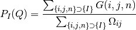
where G is the input workspace normally related to the raw counts workspace as:
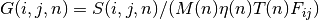
That is the normalization was performed before the Q calculation which
gives the same probilities at high numbers of particles counts but
weighted noisy, low count data too highly, giving more noise in
.
The error was calculation did not include the errors due the normalization or any corrections.
| Order | Name | Direction | Type | Default | Description |
|---|---|---|---|---|---|
| 1 | InputWorkspace | Input | MatrixWorkspace | Mandatory | The (partly) corrected data in units of wavelength. |
| 2 | InputForErrors | Input | MatrixWorkspace | Mandatory | The workspace containing the counts to use for the error calculation. Must also be in units of wavelength and have matching bins to the InputWorkspace. |
| 3 | OutputWorkspace | Output | MatrixWorkspace | Mandatory | The workspace name under which to store the result histogram. |
| 4 | OutputBinning | Input | String | Mandatory | The bin parameters to use for the final result (in the format used by the Rebin v1 algorithm). |
| 5 | AccountForGravity | Input | Boolean | False | Whether to correct for the effects of gravity. |
Categories: AlgorithmIndex | SANS
{kind=link}